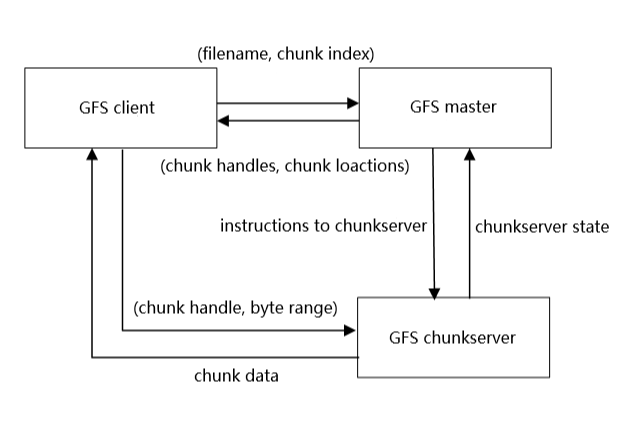
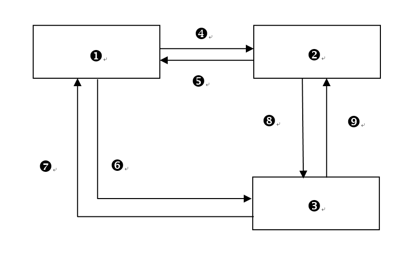
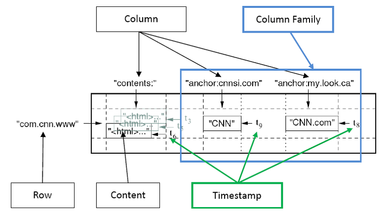
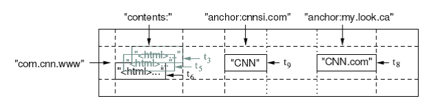
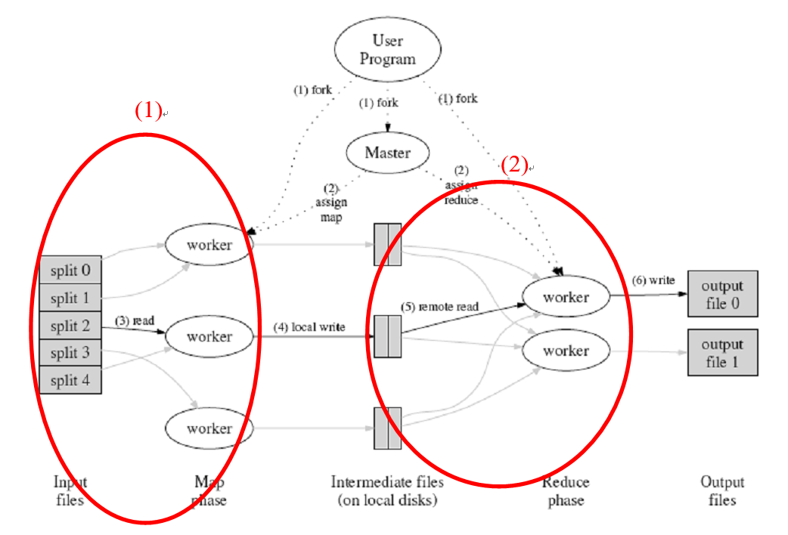

一、雲端概念
列出雲端運算的五大基本特徵。
- 可以想著有什麼方便性，並在後面添加
服務隨需自助服務網路服務測量服務- 資源
共享 - 快速
彈性
- 可以想著有什麼方便性，並在後面添加
2) 列出雲端運算的三個服務模式(含英文縮寫)。
SAAS軟體即服務PAAS平台即服務IAAS架構即服務
3) 列出雲端運算的四個佈署模型。
公有雲社群雲私有雲混合雲
4) 若以下圖表示雲端運算的概念，請解釋之。
- 用戶可以用
各種連網設備連接雲端服務 - 雲端中
有各種軟硬體資源以服務形式存在 - 可以用
網路連上雲端
舉例說明基礎建設雲(
IaaS)所提供的服務。記憶體儲存空間(硬碟)CPU(存取記憶體中的東西進行運算)網路設施(流量)資料中心設置伺服器
解釋平台雲(
PaaS)所提供的服務。- 提供
含硬體設備的開發平台，讓企業人員在平台上開發，無須軟體的下載及安裝
- 提供
舉出五種應用雲(
SaaS)所提供的服務。列出 google 服務，並用
網路做開頭- 網路
文字處裡(word) - 網路
試算表(excel) - 網路
簡報(ppt) - 網路
排程管理(行事曆) - 網路
郵件服務(gmail)
- 網路
SaaS 具體工具:
ERP(企業資源計劃)、CRM(客戶關係管理)、OA(辦公自動化)、EHR(人力資源管理)、SCM(供應鏈管理)
公有雲(Public cloud)與私有雲(Private Cloud)有何不同。
公有雲: 大家都能用(一般大眾)私有雲: 限制特定組織人員可用(公司內部)
比較建構公有雲(Public cloud)或私有雲(Private Cloud)時應考慮之事項。
公有雲: 成本低、安全低私有雲: 成本高、安全高
對一般大眾而言，使用雲端運算有什麼好處?
方便(使用方便性)隨地可用(立即可上線)操作簡單(操作更輕鬆)程式開發社群
對企業用戶而言，使用雲端運算有什麼好處?
省成本更新、升級更快
二、雲端技術
雲端運算中虛擬化的特性為何?
想想 OOP 是為了什麼?
- 封裝資料讓不必要的東西不讓人看見
- 並把各種資源打包成一體
- 在想撰寫某些新功能時可以覆寫方法
雲端的運算對照
虛擬各種軟硬體資源隱藏不必要的細節實現在真實環境中的部分或全部功能
雲端運算中虛擬化種類有哪些?
軟體硬體記憶體儲存體資料桌面網路...
請以圖形方式表現硬體虛擬化之概念。
|
|
||||||||||||
| Virtualization Layer | |||||||||||||
| Host Operation System | |||||||||||||
| Hardware | |||||||||||||
比較伺服器(server)虛擬化與桌面(desktop)虛擬化之不同處?
伺服器(server)虛擬: 將
一台實體伺服器切開變成很多小的伺服器並管理的技術- 將大切小並分割共享(可參考
VMWare，把主機中切割一小部分空間用來安裝新的作業系統)
- 將大切小並分割共享(可參考
桌面(desktop)虛擬: 可以共用伺服器虛擬出的環境(
虛擬電腦)
寫出區域網路虛擬化及廣域網路虛擬化之代表性技術。
區網:VLAN廣域網路:VPN
說明 GFS 的特性。
可伸縮的分散式檔案管理系統- 如果將資料儲存在一堆便宜電腦中，
GFS可以容錯 高效處裡客戶資料存取請求
完成下列 GFS 的架構圖。
- GFS
client - GFS
master - GFS
chunkserver - (
filename, chunkindex) - (chunk
handles, chunklocations) - (chunk
handle,byterange) - chunk
data instructionstochunkserverchunkserverstate
- GFS


解釋 GFS 如何做到容錯。
chunkserver失效時：每個chunk有三個以上複製，一個失效時，其餘仍能正常工作。master失效時：可依據checkpoints及operation log修復。- 簡單來說就是會有多個 server 專門用於備份資料，出問題時替換 server，並且在無法主電腦(master)沒用時依據 log 將資料還原
解釋下圖 Bigtable 中的 row, column, column family, timestamp, content
row:com.cnn.wwwcolumn:html,cnn,cnn.comcolumn family:cnn,cnn.comtimestamp:t3,t6,t9,t8content:html...


MapReduce 是什麼? 用途為何?
學術性說法
- MapReduce 是一個強大的 programming model，使用者能夠藉此處理大量資料的運算並自動平行分配運算，達到了加速的效果。
自我學習
MapReduce是種很強大的設計模型，用這種方式可以處裡大量資料並自動平行分配運算，達到加速效果
解釋下圖中圈起來的部份 MapReduce 的機制在做什麼?
學術性說法
- 被分派的 Map 任務的 worker，首先從相對應的分割(spilt)讀取資料，並從中分析出一組對應的 key/value，然後在傳送給使用者定義的 Map 函數處理。Map 函數產生的 intermediate key/value 會先暫存在記憶體中。
- 負責 Reduce 任務的 worker 會使用 RPC 來讀取在當地磁碟中的暫存資料，而當讀取完所有的 intermediate key/value 後，worker 會對它做排序來把有相同 intermediate key 的 value 集合起來。
自我學習
- Map(give work) →
worker→ spilt(getkeyorvalue) → function Map(key, value) → local desks(save in memory) - Reduce →
worker(usedRPCto read local data and sort key's value)
- Map(give work) →
